A dyslexia-friendly classroom
Practical ideas that help students with dyslexia show what they know, one lesson at a time.
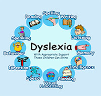
1. Set realistic, achievable targets for each lesson
The academic content does not need be ‘dumbed down’ but the expectation in terms of writing and volume of work needs to thought about carefully. There is nothing wrong with having high expectations, but remember that dyslexic children are often working twice as hard to process instructions and carry out a sequence of steps within a task. Aspects of a task that may seem routine can often drain all the child’s energy leaving little energy for creativity or thinking. Consider which skills you actually want the child to use or develop within a task and provide scaffolding for the other skills needed. Very often teachers ‘rob’ dyslexic children of a sense of achievement by just accepting whatever they complete in a lesson. The child knows that they haven’t completed the task and so feel like a failure. Simply reducing the number of questions to be answered from 5 to 10 will make a huge difference. As can asking the child to write one paragraph rather than a whole story. But remember it should not always be the beginning of the story. Use a teaching assistant to scribe the first paragraph and ask the child to write the middle of the story. Use a dictaphone or ipad for the child to verbally record the beginning and middle and then write the end. Shared writing where the adult and child take turns to write a sentence can make recording ideas less laborious.
2. Give positive, constructive feedback
Children with dyslexia already know that their spelling may not be correct and that their handwriting is messy. Mentioning this in every lesson is not helpful and will not lead to improvement. These skills need to be worked on in a structured way outside the classroom. Remember what the learning objective for the lesson is and focus your comments on this.
3. Understand how spellings are learnt
Correcting numerous words within a child’s piece of writing will not help them spell them correctly next time. Nor will writing each work out 3 times at the bottom of the page. Dyslexic children need to use multisensory methods to learn new spellings, they also need to have spelling rules explicitly taught in a systematic way. They will need numerous repetitions and practise of using words in sentences before they will remember a word automatically. They can also only take on spelling rules that they are developmentally ready for. For example: if a child is learning initial blends in their support lessons, there is little point correcting words with common suffixes like ‘station’ or ‘terrible'.

4. Keep verbal instructions short and provide visual checklists
One of the most common difficulties for dyslexics is weak working memory. This means that very often they find it hard to recall more than one instruction at a time. If you give a lot of verbal information at once a dyslexic child may find it hard to process what you say and if their working memory overloaded they will not remember what was said at all. Breaking a longer instruction into 3 shorter instructions can help. Encourage the child to count each instruction with their fingers and recall what it is. Provide a visual checklist that can be referred to during the task so that they child can remind themselves of the steps.
5. Consider font, layout and size of print of worksheets and resources
Many dyslexics have difficulty processing visual information. Certain fonts are easier for dyslexics to read these include Times New Roman, Comic Sans and Century Gothic. Busy worksheets can be very daunting for a dyslexic child and they may not be able to successfully access the information needed to complete a task. You could consider splitting one worksheet into several worksheets and enlarging the text.
6. Avoid copying from the board
Although supposedly this practise doesn’t happen anymore, I have observed enough lessons to know that there are still things that have to copied from the board. It may be the date and learning objective of the lesson, sentence starters or headings for each paragraph. Many teachers still think copying from the board is a simple task, but for the dyslexic child it is not. Many have visual difficulties that make switching focus between near and far difficult. They may find it hard to keep track of the lines and the words within the lines. I have watched dyslexic children spend a whole lesson copying just the date and the learning objective. Even having to refer to the board for word list or instructions can be difficult. Providing photocopied notes or information on an individual white board is the most helpful solution. If the information has to be displayed on the board then numbering the lines and using different colours for each line can help.
7. Provide a study buddy
Having to constantly ask the teacher for clarification or not being able to read the questions on a worksheet can be embarrassing. Seating the dyslexic child with a supportive capable child is a good strategy. This means that the child can discretely ask for help when needed and be more independent.
8. Organise the classroom so that scaffolds, checklists, word banks and concrete resources are assessable to all pupils. Resources that help dyslexic students are helpful to all students. Making it normal to use prompts and tools for learning benefits everyone. Dyslexic children find it hard to keep all the information needed to carry out a task in their head and so checklists are vital. Also many dyslexics learn best with concrete materials particularly in maths and spelling.
9. Try to highlight the pupil’s strengths both personally and publicly.
Self esteem is a big issue for dyslexic pupils. Although they have genuine strengths very little time or acknowledgement is often given to these at school. They have to face day after day of class work that challenges them to their limits. They are often painfully aware of their shortcomings compared to their peers. Receiving praise for something they know they are good at can be a real confidence boost. It also helps other children see the child in a more balanced light and not just as the child who is slow at reading and writing.
10. Allow time for skills to develop
Dyslexic children are not lazy, they are overloaded by much of everyday life and are working twice as hard to deal with many tasks that others consider simple or routine. Fatigue plays a huge part in their performance, leading to good days and bad days. A dyslexic student can learn to read and write competently, it just takes time and the right teaching and support. Just because a child cannot read in grade 2 does not mean that they will not read at an age appropriate level in grade 5. However, it is important to remember that they are not on the same timeline as the rest of the class. As a learning support teacher, I track children all through school and I know how much progress a child needs to make each year to reach the goal of adequate literacy skills at the end of primary school. There is enough time for these skills to develop at a more natural pace for dyslexic students. Many teachers feel they are doing a disservice to child if they do not put pressure on them to ‘keep up’ with year group expectations. This is a false economy, it is like building on sand. The learning is not secure and is quickly forgotten and lost. This leads to a sense of failure and low self esteem. It is better to accept the level the child is working at and find ways to help them develop age appropriate skills and concepts in other areas without focusing on reading and writing skills. With high quality specialist interventions outside the classroom these skills will develop over time.
Mythbusting
Try my quiz which I often use during my staff training on dyslexia. All the statements are based on comments I commonly hear from both teachers and parents.
Can you work out which are true and which are common misconceptions about dyslexia?
True or False? Dyslexic or not?
1. He confuses b and d so he must be dyslexic
2. She can’t be dyslexic because she can sound out and decode words
3. His brother is dyslexic so I think he is probably dyslexic too
4. She’s always forgetting where she has left her PE kit
5. He has a good memory- he remembers all sorts of things we do as a family
How did you do?
Here are the answers.
1. Although some dyslexic children do reverse b and d it is probably not the best indicator of dyslexia. Young children often reverse b and d because developmentally their brain does not yet understand that they are 2 different symbols. We have created the convention of reading from left to right and it takes time to train our brain and eyes to view symbols from this perspective. Children generally stop reversing letters about the age of 7 and 8 while some dyslexic students will continue. There are many other early indicators of dyslexia which are much more helpful in ensuring early identification and intervention. I will discuss these in another article.
2. Some people think that if a child can read they can't be dyslexic. However in my experience this is often the first skill they develop, although it may be slow and inefficient. With many schools following structured phonic programmes and using multi-sensory approaches most children do learn their letter sounds and how to decode regular words.
The noticeable difference with dyslexic learners is that they do not commit these words to memory. A typical learner will sound out a word once or twice and then it will go into their long term memory. So when they see the same word several times on a page or in the same book they will remember it. For a dyslexic child they think it is a new word every time and will sound out again and again. This makes reading slow and laborious. This is why interventions like Toe by Toe and Units of Sound are so important for dyslexic students. (More about these resources in further articles)
3. Dyslexia does run in families. The difficulty is many people from my generation or before were never diagnosed as dyslexic. We may recognise that we struggled with literacy tasks at school or with sequences, memory or remembering instructions. But we may have excelled in an area of interest. Strangely enough dyslexics often attract other dyslexics without knowing it. The result is two mildly dyslexic people may then have very dyslexic children. And while they only experienced a 'blip' at school and focused on what they were good at so they became successful adults. Their child may experience much bigger challenges as our expectations of young children and writing has changed.
4. Forgetting everyday things is very much part of the dyslexic profile. I personally leave a trail around my school. I leave a pen in one room, cup in another, my diary somewhere else!
5. Memory is a big issue for dyslexics but many people misunderstand how complex the memory is. Some one can be incredibly good at remembering events or facts but not be able to remember their own phone number. I have worked with children who can remember everything there is to know about the Poison Dart frog and not remember that 3 + 2 = 5 This is hard for us to understand as we want to bright students to be consistently bright, it doesn't sit well with parents or teachers that a child can be very good in understanding concepts but can't do basic spelling or arithmetic. Main thing to understand is that there are many types of memory that work independently of each other. Working memory is the fundamental flaw for dyslexics and in for many learning difficulties. The working memory is our brain's note pad. It is where were we keep a phone number just long enough to write it down. It is also where we keep new facts while we process them so we can store them in our long term memory. But if we can not keep something in our head long enough to encode it and store it, the information is lost. Hence the difficulty with remembering irregular spellings or a 'meaningless string of numbers' - like the 3 times table. Information with meaning can be quickly linked to prior knowledge and so is stored and remembered. Episodic memory is yet another type of memory and many dyslexics can remember events and experiences with great detail.
I hope this gives you food for thought.... Look out for future articles on working memory, key dyslexic resources and early signs of dyslexia
Dyslexic or not?
As teachers and parents we probably spend far too much time time debating whether a child is dyslexic than we actually should. Of course we do not want to mislabel a child but equally we should not waste valuable time while we debate.
If a child is struggling to read or write we should just get on and provide support and interventions. In truth dyslexic interventions work for all children. The only difference is that most dyslexic children can not learn to read and write properly without them where as typical children can.
Sadly there are many children who are 'mildly' dyslexic or have dyslexic 'tendencies' who are never given access to these valuable resources and approaches. They struggle to read and write throughout school and often never really show their true potential. They puzzle their teachers because they may have excellent verbal skills and general knowledge or they are good at problem solving and are very observant but their writing is terrible.
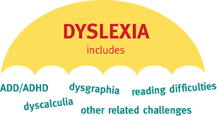
For this reason I prefer to take a much more pragmatic approach and use dyslexia as an umbrella term. There are a whole range of learning difficulties that happily sit under this umbrella, typically these children have working memory difficulties (please see my previous articles for advice on identifying and supporting working memory difficulties). In addition they will have a combination of the following difficulties - visual perceptional difficulties, visual memory difficulties, auditory discrimination difficulties, auditory processing difficulties, motor skill and coordination difficulties, attention difficulties. Any of these children may benefit from a different approach to learning to read and write.
It is important to me that every child experiences success at school and for this to happen we have to accept that children learn differently. Many children (and adults) learn by doing rather than listening or looking at something. We also have to remember that letters and numbers are in essence abstract and we have to train our brain to process them. This is where multi-sensory approaches which involve hands on activities and interacting with words are so effective.
Children who struggle to read and write typically lack the underlying skills necessary to read and write effectively. This could be due to dyslexia or a related difficulty. However it is not always necessary understand why these skills are missing or under developed but rather focus on how we can help.
In education we tend to take the approach that these skills develop naturally with age and we set our goals and curriculum based on the age of the child rather than evaluating their underlying skills. Parents also take the schools lead in where their child should be in their literacy skills and then puzzle when their child struggles to do a seemingly 'simple' reading or writing task.
We would never try to bake a cake without all the ingredients and if one was missing we would substitute it with something similar honey instead of sugar for example. But if we left out the eggs it would be a disaster! And yet in school we often try to teach reading and writing when not all the necessary skills are in place or fully developed. We should take more notice of where children are developmentally rather their age when teaching literacy skills. We give many children and parents an unnecessary sense of failure because they do not follow a conventional timetable. In my 16 years of experience as a specialist teacher, I have not met a child who was not able to learn to read, it just took a different approach and more time. Unfortunately many schools are unwilling to allow the child the extra time they need to develop these skills properly. A bettter understanding of dyslexia and the reading and writing process may help to change this.
There are many excellent resources and approaches that both parents and teachers can use to help support those who are struggling. It is important that we try to strengthen the weaker skills while using the stronger skills to compensate. Some of the best resources are featured on the Teacher page - Dyslexia where I list my top ten dyslexia resources. Also see the Parent page - Dyslexia where I suggest some activities and approaches to use at home. I will discuss some of these resources and approaches further in future articles.
If you feel your child if having more difficulty with reading or writing than you expected don't hesitate to ask your child's school for advice or seek professional help. Don't wait for your child to feel like they are 'failing' or start avoiding difficult tasks before you take action. The earlier you intervene the sooner difficulties can be overcome and your child can begin to experience some success. It is likely to be a long road of hard work but there is light at the end of the tunnel for dyslexic learners.
Here are my top ten resources for dyslexic learners
1. Stile Trays A very versatile resource which allows children to practice their skills without writing. They are self checking so a child can work independently. This can be a real confidence boost!
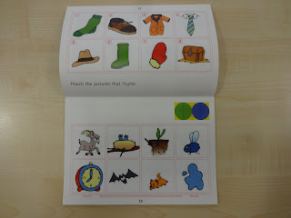
2. Alpha to Omega A structured spelling programme best used with the alphabet arc and magnetic letters. Children work systematically through letter patterns and only write words that they have already practiced with magnetic letters. The dictation sentences are carefully constructed to allow children to aim for accuracy and success.
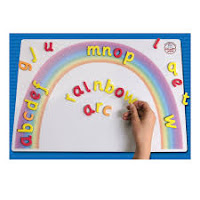
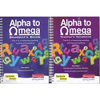

3. Units of Sound computer program. A very effective way of systematically learning and practicing letter patterns or 'units of sound'. It constantly revisits previous letter patterns helping them to be retained. There are memory and dictation sections which help to develop memory skills. It is now available online which allows it to be used at home as well as at school.
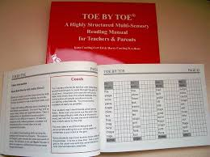
4. Toe by Toe This is still the most effective way to improve the reading skills of anyone who is struggling. Best used everyday for 5 -10 minutes (3 times a week can still be effective.) It systematically works through letter patterns starting with alphabet sounds and 3 letter words building up to polysyllabic words. At every stage the phonic skills are practiced with nonsense words and in carefully constructed sentences.
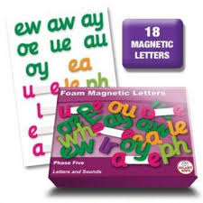
5. Smart Phonic magnetic letters These magnetic letters are joined together to make common digraphs particularly vowel digraphs. Many dyslexics learn best in a kinaesthetic way and these letters make letter patterns explicit. Great for word building and making sets of words with the same pattern. They can be used to make Alpha to Omega word lists.
6. Gel Boards seem to be an under used resource. Many dyslexics find letter formation and pencil control difficult. Gel boards are an excellent and fun way to practice handwriting patterns and letter formation. If you press too hard the marks do not show properly so it is a good way of training children not to use too much pressure when they write.
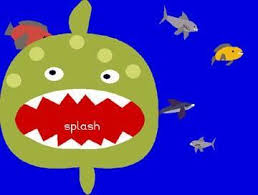
7. Word Shark Great interactive games which can be set to match the letter pattern a child is working on. Children can work on 3 letter words right up to more complex prefixes and suffixes.
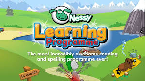
8. Nessy Learning, Hairy Phonics and Hairy Words Really fun interactive games and apps. The Nessy Learning Programme can form the central part of any intervention plan. It has a reading and spelling challenge to set the correct level. It then provides memorable video animations for each letter pattern. There are games and worksheets to allow practice in lots of different ways.
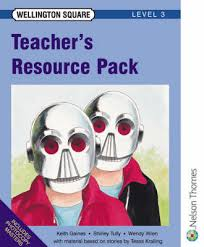
9. Wellington Square Books Many teachers think that these books are a bit outdated, but in my experience the children who read them really enjoy them. Aimed at Junior age children who are still in the early stages of learning to read. All the books are carefully graded to only introduce a few new words at a time (in a similar way to Oxford Reading Tree). The support materials are excellent and provide a wide range of activities to support early comprehension skills.
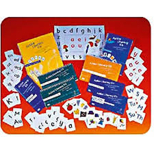
10. Active Literacy Kit A little known resource available from Dyslexia Action. It is excellent at pinpointing weaknesses in children who are slow to develop their literacy skills. Each child has their own combination of activities to strengthen their skills. It works on the alphabet sequence, auditory discrimination, reading fluency and spelling. Very easy for both teaching assistants and teachers to use.
more
A very practical read about Dyslexia by Neil MacKay
We spend a lot of time as teachers debating whether a child is dyslexic or not. When really we should just start intervening to help a child who is struggling with reading, writing or maths. As teachers we need to identify children who would benefit from "Dyslexia friendly approaches". We should remember the main reason to label in the first place is that it unlocks a whole range of resources and strategies that will help a child make progress.
I really like Neil MacKay's approach of thinking about learning differences rather than learning difficulties. He highlights some of the strengths that many dyslexics process. He also raises the issue that it is the demands and expectations of the school system that cause most of the stress for dyslexic students. As a teacher and educationalist you have the power to change the classroom environment to support dyslexic learners.
Liz Dunoon's Dyslexia website Dyslexia Daily is excellent, full of resources and positive advice. She also highlights the strengths that are associated with dyslexia.
"Welcome
Dyslexia Daily is a friendly on-line community where you'll meet like minded parents, educators and LD specialists to support you on your journey with dyslexia. As part of this community you'll be inspired as you access FREE tips and techniques, strategies and systems, and so much more!
You can join a discussion in the forum, read the latest blog (news), find a service provider from the directory or download free information.
We look forward to having you join us.
Liz Dunoon Dyslexia Daily, Editor"
Have you heard of Stealth dyslexia ? There are many children who have dyslexia but it goes undetected because they have good reading comprehension skills. Those with Stealth dyslexia struggle with decoding words. Their reading speed and accuracy are affected but they have average or above average reading comprehension. Writing skills are also affected including spelling, organisation and speed. These children often under perform compared with their underlying ability and can be misdiagnosed as having dygraphia or ADHD. These children often have strong problem solving skills but struggle at school particularly in secondary when the work becomes more lengthy and complex. Sadly, because these child 'fly under the radar' they do not receive the interventions and support they need. To find out more check Dyslexia Advantage by Brock and Fernette Eide
and www.understood.org
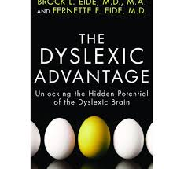
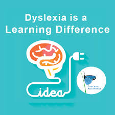